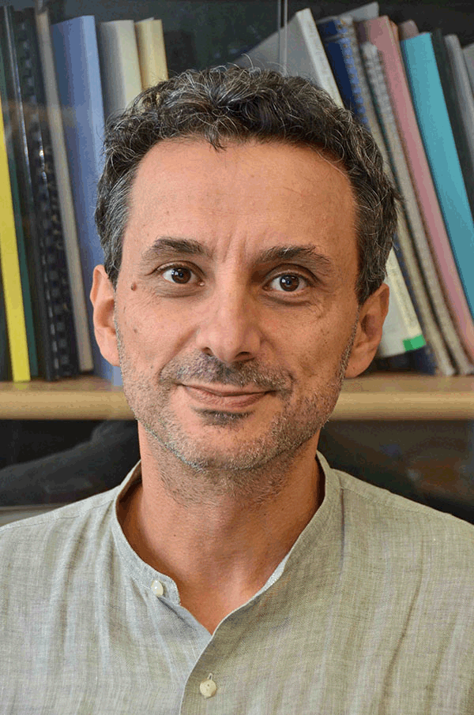

|  |
|
Emmanuel Bacry CNRS
Research Fellow C.M.A.P
(Centre de Mathématiques Appliquées) |
Some Research interests : Point processes, Large dimensions, Big data, Statistical signal processing, Machine learning, Multifractal, Statistical finance, High frequency finance modeling, ...